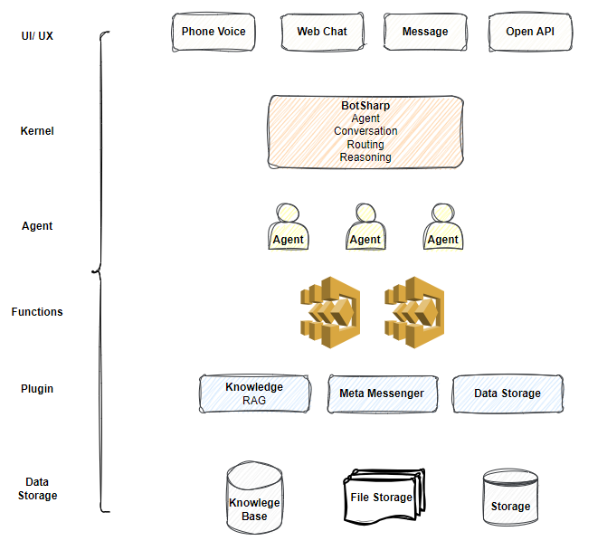

BotSharp 是一个开源应用框架，旨在加速将大型语言模型（LLM）集成到您的当前业务系统中。该项目涉及自然语言理解和音频处理技术，旨在促进智能机器人助手在信息系统中的发展和应用。开箱即用的机器学习算法使普通程序员能够更快、更轻松地开发人工智能应用程序。
BotSharp 是一个高度兼容和高度可扩展的平台构建器。它严格遵循组件原则，解耦平台构建器中所需的每个部分。因此，您可以选择不同的UI/UX，或选择不同的NLP标注器，或选择更高级的算法来执行命名实体识别（NER）任务。它们都是基于统一接口的模块化组件。
 从上图可以看出，基于 BotSharp，您可以通过三个组件启动自己的聊天机器人平台：
BotSharp 通过提供一个自然语言理解（NLU）引擎来处理和理解自然语言输入，使您能够在产品和服务之上构建对话界面。
传统的计算机接口需要结构化数据，这使得这些接口的使用不自然且有时困难。而机器学习接口是数据驱动的，计算机可以从非结构化数据（句子）中找到逻辑或信息。
例如，一个简单的请求可能是“你能播放乡村音乐吗？”。其他用户可能会问“播放一些浪漫的歌曲。”
即使是这个简单的问题，您也可以看到实现对话体验是多么困难。解释和处理自然语言需要一个非常强大的语言解析器，能够理解语言的细微差别。
您的代码必须处理所有这些不同类型的请求，以执行相同的逻辑：查找某个功能的预测信息。因此，传统的计算机接口往往会迫使用户输入一个众所周知的标准请求，从而损害用户体验，因为这样更容易。
然而，BotSharp 通过为您处理自然语言理解（NLU），让您轻松实现对话用户体验。使用 BotSharp 时，您可以创建能够理解自然语言含义和细微差别的代理，并将其翻译为您的软件可以理解的结构化含义。